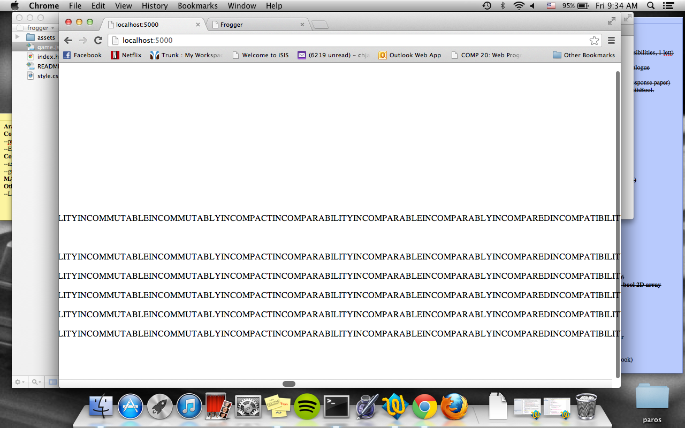

ScoreCenter Assessment
Introduction
The ScoreCenter Application provides a way for online HTML and HTML5 games to send
scores and get scores from an outside database. The ScoreCenter holds data from multiple
games, and any website can send GET and POST requests to the application, as CORS is
enabled.
We were hired to assess the security of this application, determining pertinent security
risks and providing suggestions to fix them.
Methodology
I reviewed the source code for the web application, Score Center.To test the application,
I first attempting to send a normal POST request. Then, I examined the ways in which I could
still fit into the categories designated, while not providing the expected data, noting
weaknesses. I then tested these perceived weaknesses, the results of which can be found below.
Tools: I used Firefox'sTamper Data to check the status of requests.
Abstract of Findings
There are several security risks present in the Score Center application, all of which stem
from a lack of Input Validation.
- It is possible to send any length of string or number into the POST Request. Therefore,
massive amounts of data can be sent to the web application, slowing down the page and
clogging up the database.
- It is possible to add a script to the POST Request, resulting in the execution
of javascript scripts that are seen by all users of the website.
- It is possible to send whatever information one desires, regardless of the
score received, username inputted, or game being played. This delegitimizes the information
stored in the application.
Issues Found
Issue 1: Input Validation; Length of input
- Location: /submit.json
- Severity of issue: HIGH. There is no limit on the amount of data a user can send
to the Score Center as a post request. It is, therefore, possible to send massive amounts
of data to the Score Center, resulting in both faulty data and a potential clogging of
MongoDB.
- Description of issue: To test this, I concatenated about 113680 lines of a
dictionary into a single string and sent it as a username several times:

Then, I concatenated more lines of the dictionary and added that to one previous, sending
it as a username several times:
This severely slowed the loading of the page. After leaving the page and returning, it took
nearly 15 seconds to load:
- Resolution: Limit the size of the input you are receiving. The size needs to be limited
for both the username field and the score field. While web browsers limit the size of the string
in the alert box, this can be bypassed, through the means demonstrated above.
Issue 2: Cross-Site Scripting
- Location: /submit.json
- Severity of issue: HIGH. Through the post request, it is possible to pass in a script
that will affect all of the users. This is an enormous problem, as it completely
eliminates the usefulness and security of the site.
- Description of issue: It is possible to insert a script into the score field and
send it to submit.json. Since this script is a field that is repeatedly printed onto
the screen, every time the page is loaded, each script that is sent is executed. First,
I did a simply alert tag, resulting in this:
Then, I created popup windowsand replaced the website with another:
Which resulted in this:
Note that both of these actions occur every time regardless of what I, or anyone else, submit to the ScoreCenter.
- Resolution: Validate the input that is received and reject it if it is not
exactly what is requested (a number, a string with no tags, etc).
Issue 3: Score/User Validation
- Location: /submit.json
- Severity of issue: MEDIUM. Any user can send any score (truthful or fabricated)
to the Score Center, which delegitimizes the web application. If another website
uses the Score Center's GET API, they are expecting the top 10 scores that were
actually achieved on the requested game.
- Description of issue: Currently, any user anywhere can submit a POST request
to the Score Center; the request does not even necessarily have to be from the same
game. Note the screen shot below.

Here, I simply wrote a POST request into my frogger
game and gave myself an incredible score. But, note the actual games that sent the
request from:

I got downwards of 400 points! However, on the Score Center, my made-up score is recorded:

That same made up score was sent for both games, and if I wanted to, I could even
fabricate the name of the game I was sending the information from.
- Resolution: In order to be a truly legitimate recorder of high scores for online
games, the Score Center app needs to have user validation. Before being able to input
a score, you must be validated as a user that has administrative rights over the game,
preventing random people from sending (1) bogus scores and (2) bogus scores for made-up
games.
Conclusion
The weakest link in this web application is clearly /submit.json. There are numerous
security risks that all boil down to a lack of input validation. At minimal cost of 50 dollars,
we will be able to make your website more secure against attacks such as the ones demonstrated
above. In future web applications, consider adding more processing of POSt request on
the server-side.